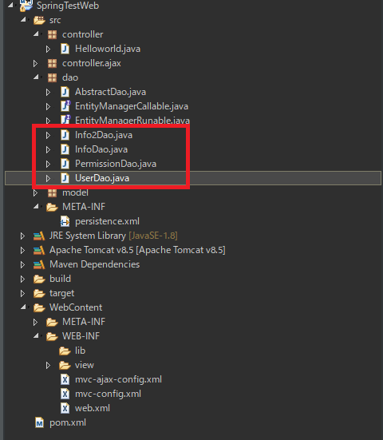
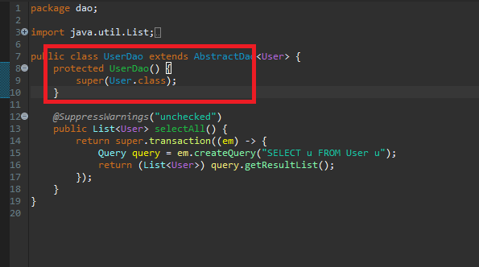
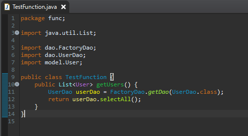
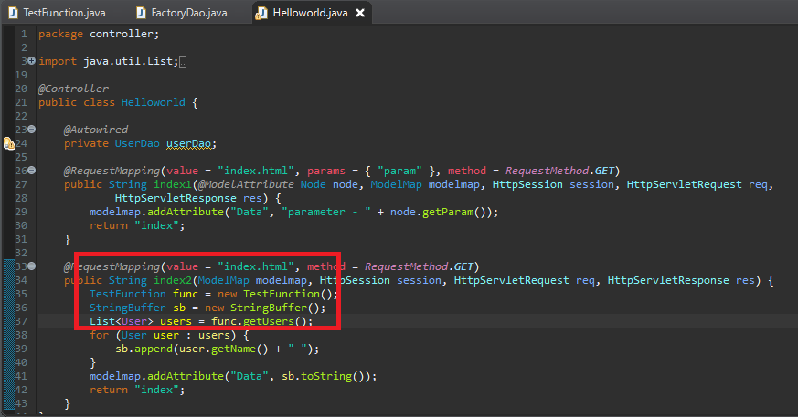
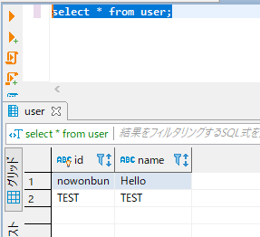

[Java] JPAのDAOをFactoryパターンで管理する方法
こんにちは。明月です。
前述で「Spring Web Framework」で「@Autowired」アノテーションを通って依存性注入(DI)を説明しました。
link - JPAのSpring frameworkでDI(依存性注入)を利用してマッピングする方法(@Autowired使用方法)
でも「Spring Web Framework」の「@Autowired」を利用してマッピングはコントローラのクラスで行っています。つまり、コントローラクラスではない場合はそのアノテーションで割当てられないということですね。
しかし、その「Dao」を取得するために全てのクラスをコントローラクラスを継承することをできないでしょう。
そのために、依存性注入以外にファクトリーパターンを作ってDaoを管理することが必要です。

「Dao」はデータ用のエンティティではないので何回に割当て(new)をする必要がありません。「FactoryDao」を生成して内部は「flyweight」パターンで一回にインスタンスを生成すれば再使用するように設計するとよいと思います。
そして「Dao」クラスは依存性注入のためコンストラクタを「protected」で作成しましょう。そうすれば「FactoryDao」を通りなく割当てができないですね。

そして「FactoryDao」を作成しましょう。
package dao;
import java.lang.reflect.Constructor;
import java.util.HashMap;
import java.util.Map;
public class FactoryDao {
// FactoryDaoはシングルトンパターンでプログラム上で一回だけインスタンスを生成する。
private static FactoryDao instance = null;
// FlyweightパターンでDaoのインスタンスが生成すれば再使用して重複割当てをしないようにする。
private Map<Class<?>, AbstractDao<?>> flyweight = null;
@SuppressWarnings("unchecked")
// Genericでクラスタイプがパラメタで入れ込んだらReflectionを利用してクラスを生成する。
public static <T> T getDao(Class<T> clz) {
try {
// Singleton pattern
if (instance == null) {
instance = new FactoryDao();
}
// Flyweight pattern
if (instance.flyweight == null) {
instance.flyweight = new HashMap<Class<?>, AbstractDao<?>>();
}
// flyweightマップ中で存在しなければDaoを生成する。
if (!instance.flyweight.containsKey(clz)) {
Constructor<T> constructor = clz.getDeclaredConstructor();
// コンストラクタがprivateやprotectedでも生成する。
constructor.setAccessible(true);
instance.flyweight.put(clz, (AbstractDao<?>) constructor.newInstance());
}
// daoをリターンする。
return (T) instance.flyweight.get(clz);
} catch (Throwable e) {
throw new RuntimeException(e);
}
}
}
上のクラスを使うようにコントローラではないクラスを作ってコントローラからよびだしましょう。


そしてプログラムを起動して確認しましょう。


FactoryDaoでも依存性注入(DI)とは少し形が違いますが、流れは似ている構造になりました。
実はFactoryDaoと依存性注入(DI)を一つのクラスで管理ができますが、そこまで厳しく設計する必要があるかな。
添付 -  SpringTestWeb.zip
SpringTestWeb.zip
- [Java] Java servletでインスタンスを初期する方法2019/10/17 07:15:48
- [Java] Spring web frameworkで発生する文字化けのEncoding設定2019/10/16 07:32:55
- [Java] Web Spring frameworkでfilter設定2019/10/15 20:12:35
- [Java] Web serviceのweb.xmlでエラーページ設定2019/10/14 20:13:44
- [Java] JPAのDAOをFactoryパターンで管理する方法2019/10/13 22:55:52
- [Java] JPAのSpring frameworkで依存性注入する方法2019/10/13 00:40:08
- [Java] JPAでDAOを生成する方法2019/10/11 07:30:14
- [Java] JPAでトランザクションの使用方法とオブサーバーパターンで共通トランザクション関数を作り方2019/10/10 07:29:43
- [Java] JPAのQuery を作り方2019/10/09 07:34:08
- [Java] JPAのEntityクラス設定(Cascade, fetch)2019/10/08 07:43:33
- [Java] 42. Web Spring frameworkのviewで使うプログラム言語(JSTL) - コア―、フォマート2019/10/07 07:38:13
- [Java] 41. Web Spring webframeworkのControllerからajaxの要請する時、jsonタイプのデータを返却する方法2019/10/04 19:24:43
- [Tools] Dbeaver(無料Sql queryブラウザツール)2021/04/28 18:26:49
- [Bootstrap] HTMLデザインのフレームワークのBootstrap紹介2020/07/30 19:06:36
- [Python] メール(smtplib)を送信する方法2020/07/27 18:38:43
- [Python] HttpConnection(requestsモジュール)でウェブサーバーで接続する方法2020/07/20 14:41:51
- [Python] Excel(openpyxl)を扱う方法2020/07/16 16:40:31
- [Python] ファイル圧縮、解凍(zipfile)する方法2020/07/14 19:14:22
- [Python] Apache cgiでPythonを使う方法2020/07/09 19:58:19
- [Python] Web serverを起動する方法(http.server)2020/07/09 00:13:13
- [Python] WebSocketを使う方法2020/07/07 17:29:18
- [Python] PythonとJavaのソケット通信する方法2020/07/03 18:35:50
- [Python] PythonとC#のソケット通信2020/07/01 19:28:22
- [Python] INI(環境設定ファイル)を扱う方法2020/06/30 18:26:01
- [Python] Jsonを扱う方法2020/06/29 19:18:15
- [Python] XMLファイルを扱う方法2020/06/26 19:18:14
- [Python] IOを利用してCSVファイルを扱う方法2020/06/25 18:20:30